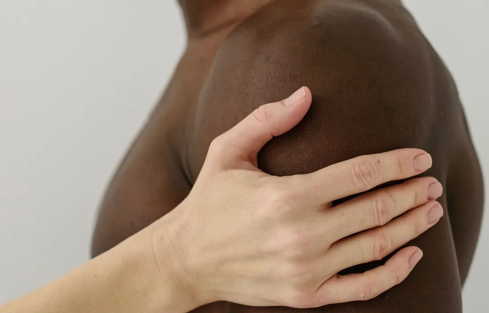

Shiro Pichu in Patna

Shiro pichu is perhaps the most patient of the head therapies. There is no flowing stream as in shirodhara and no tall leather cap as in shiro basti. A folded pad of cotton, soaked in warm medicated oil, is laid on the top of your head, sometimes held in place with a light bandage, and replaced or re-warmed as it cools. For half an hour or longer, the oil simply rests on the crown. For many people who struggle with a mind that will not slow down, the stillness itself is part of the appeal.
What Shiro Pichu means
Shiras is the head and pichu is a pad or swab of cotton or cloth. Shiro pichu therefore means "head pad". The pad, usually a few centimetres thick and about the size of a palm, is soaked in warm oil and placed over the vertex, the area around the anterior fontanelle. The same idea is used elsewhere in the body, for the back, joints and even internally in gynaecology, but on the head it has a particular place in classical practice.
Classical background
Vagbhata's Ashtanga Hridaya (around 7th century CE) describes four forms of murdha taila, oil therapy for the head, each stronger than the last: shiro abhyanga (massage), shiro seka or parisheka (pouring), shiro pichu (oil-soaked pad) and shiro basti (oil retained in a cap). The text links shiro pichu with specific complaints in traditional terms, including hair fall, cracking of the scalp, burning sensation in the head and some eye complaints. Charaka and Sushruta also discuss head oil therapies and the general benefits of oiling the head.
Shiro pichu is therefore a classical, documented procedure, not a modern spa invention. Kerala practitioners have kept it in regular use and developed many oils for it, but the method itself comes from the core texts.
How it is understood to work, and what research says
Ayurvedic reasoning
The head is described as the seat of the senses and the controller of the body. Vata aggravation is said to bring dryness, insomnia, anxiety, ringing in the ears and some headaches; pitta aggravation brings burning, irritability and heat. By keeping warm medicated oil in continuous contact with the crown, shiro pichu is believed to nourish and calm the head more deeply than massage, while being simpler and more comfortable than shiro basti.
Modern evidence
Shiro pichu appears in several Ayurvedic case reports, usually as one part of a wider plan. Reports in the Journal of Ayurveda and Integrative Medicine have described its use within multi-therapy management of central serous retinopathy (2023) and major depressive disorder (2021), alongside internal medicines and other procedures. A 2026 trial protocol in Frontiers in Medicine plans to test shiro pichu and padabhyanga as add-ons to cognitive behavioural therapy for insomnia in perimenopausal women, but results are not yet published. In short, there is clinical interest and some case-level experience, but no strong trial evidence for shiro pichu on its own. We present it as a traditional supportive therapy and never as a replacement for psychiatric, neurological or eye care.
Who may benefit
- People with difficulty falling or staying asleep
- Mental fatigue, overthinking and stress, as part of a broader plan
- Dry scalp, brittle hair and some forms of hair fall linked with dryness
- Burning sensation in the head or eyes from heat and screen strain
- Some patients with tension headaches, after other causes have been ruled out
- People who find shirodhara too stimulating or uncomfortable
Contraindications and cautions
- Acute cold, sinus congestion, fever, sore throat or productive cough
- Indigestion, heaviness and a coated tongue, signs of ama
- Scalp infection, open wounds or active dermatitis on the crown
- Head injury, sudden severe headache, vision loss or neurological symptoms, which need urgent medical care
- Very oily scalp with heavy kapha, where other therapies may be preferred
- Known allergy to oil ingredients
Depression, anxiety disorders and insomnia can be serious. Shiro pichu does not replace treatment from your psychiatrist or physician, and you should never stop prescribed medicines because you are receiving Ayurvedic therapy.
Shiro Pichu at Sabka Ved Wellness
Consultation
Dr. Aditya Kunal asks about your sleep pattern, stress, mood, digestion, sinuses and medicines, and decides whether shiro pichu, another head therapy or a different approach suits you. Digestion is assessed carefully, because heavy, poorly digested food at night is one of the commonest disruptors of sleep that Ayurveda describes.
Preparation
The selected oil is warmed in a water bath to a comfortable temperature. A clean pad of cotton or layered cloth is prepared for you alone.
The procedure, for understanding
- You sit comfortably or lie down with the head supported. A light oil may be applied to the head and body.
- The pad is soaked in warm oil, squeezed slightly so that it does not drip, and placed on the crown.
- A light bandage or cloth may hold it in place. Cotton around the hairline stops oil running into the eyes.
- The pad is re-warmed or replaced as it cools, to keep the temperature steady.
- After the set time, usually 30 to 60 minutes, it is removed and excess oil is wiped away.
This description is for understanding. The oil, its temperature and the duration are decided for each patient.
Aftercare
Keep the head covered from wind and cold for a while. Wash hair with warm water and a mild herbal cleanser when advised. Eat a light, warm dinner and go to bed at a regular time. Reduce late-night screen use during the course, as it works directly against the purpose of the therapy.
Students, professionals and sleep
Patna is a city of aspirants. Thousands of students prepare for competitive exams in coaching hubs, studying late into the night with irregular meals and a lot of tea. Working professionals carry a similar load of screens, deadlines and late dinners. Ayurveda would read the result as vata and pitta rising together: a tired body with a racing mind. For people in this pattern, head therapies like shiro pichu are often combined with simple routine changes: dinner by eight, no screens for the last hour, warm milk with a pinch of nutmeg if it suits the person, and a fixed wake-up time. The therapy may help the mind settle, and the routine is what keeps it settled.
Why it costs what it does
Each session uses a classical medicated oil, warmed and replenished during the procedure, a fresh pad and clean linen for each patient, and up to an hour of therapist attention to maintain temperature and comfort. Doctor oversight decides the oil and course. Fixed prices are not published because plans differ, but what is included is explained before you begin.
Shiro pichu, shirodhara and shiro basti
People often ask which head therapy is "better". The honest answer is that they suit different situations. Shirodhara, the continuous stream of oil on the forehead, is more stimulating and needs you to lie still for a long time. Shiro basti, oil retained in a cap, is the strongest and most demanding. Shiro pichu sits between them: deeper than massage, gentler and more practical than shiro basti, and suitable for many elderly patients and those who find lying flat difficult.
| Therapy | Method | Practical note |
|---|---|---|
| Shiro abhyanga | Massage | Short and mild |
| Shirodhara | Oil stream on the forehead | Requires lying still 30 to 45 minutes |
| Shiro pichu | Oil-soaked pad on the crown | Can be done seated |
| Shiro basti | Oil pooled in a cap | Strongest, most demanding |
Book a consultation
If sleep, stress or dryness of the scalp is troubling you, ask whether shiro pichu fits your plan. Request a slot through our appointment page or book at superprofile.bio/bookings/dradityakunal.
Sources
- CBT for insomnia with adjunct Siro-pichu and Padabhyanga in perimenopausal women: RCT protocol. Front Med, 2026
- Ayurvedic management of central serous retinopathy: a case report. J Ayurveda Integr Med, 2023
- Ayurveda management of major depressive disorder: a case study. J Ayurveda Integr Med, 2021
- Ayurveda treatments for insomnia: a narrative review. J Clin Med, 2026
We also serve patients from


Preparation, therapy, recovery. In that order.


Related therapies
Pages that pair naturally with this one.


Questions about Shiro Pichu

Shiro pichu is a classical Ayurvedic therapy in which a pad soaked in warm medicated oil is placed on the crown of the head and kept there for a set time, usually 30 to 60 minutes.
It is traditionally used to support sleep, and a trial testing it alongside CBT for insomnia has been planned. Strong evidence is not yet available, so it is used as part of a broader plan.
Shirodhara pours a continuous stream of oil on the forehead while you lie down. Shiro pichu keeps an oil-soaked pad on the crown and can often be done seated.
It is usually postponed during colds, sinus congestion and fever.
No. Never stop prescribed medicines because you are receiving Ayurvedic therapy. Any change should be decided with your treating doctor.